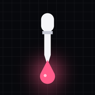

Haz scroll.
Aprende ciencia.
Si vas a deslizar el dedo igualmente, que sea por algo que te haga más listo.
- ↻Lo último de Nature, el CNIO, la NASA y más de 60 fuentes, actualizado cada hora.
- ▶Noticias, vídeos de divulgadores, posts de científicos y papers recién publicados.
- ★Filtra por tu tema favorito, busca lo que te interese y guarda lo mejor.
Para tenerla como app: pulsa Compartir en Safari y después Añadir a pantalla de inicio.
Gratis y sin registro.